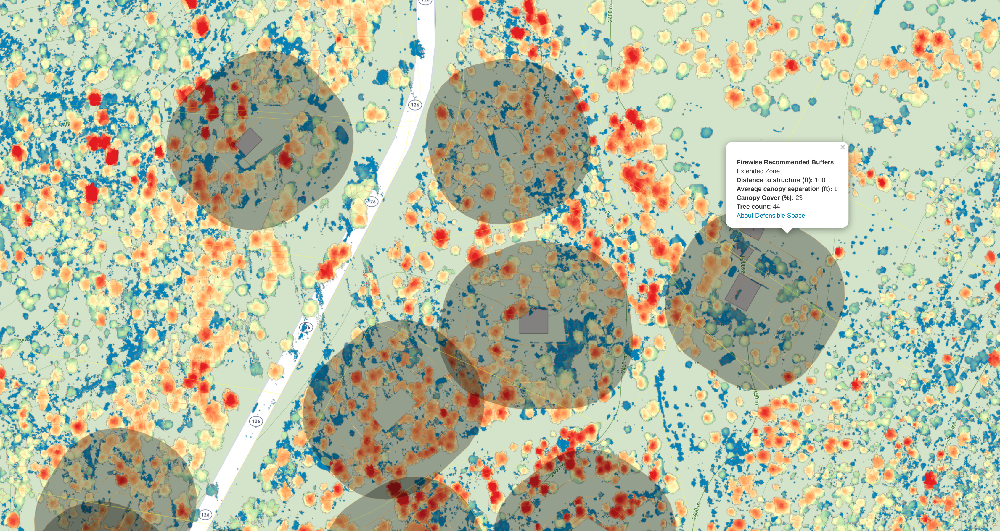
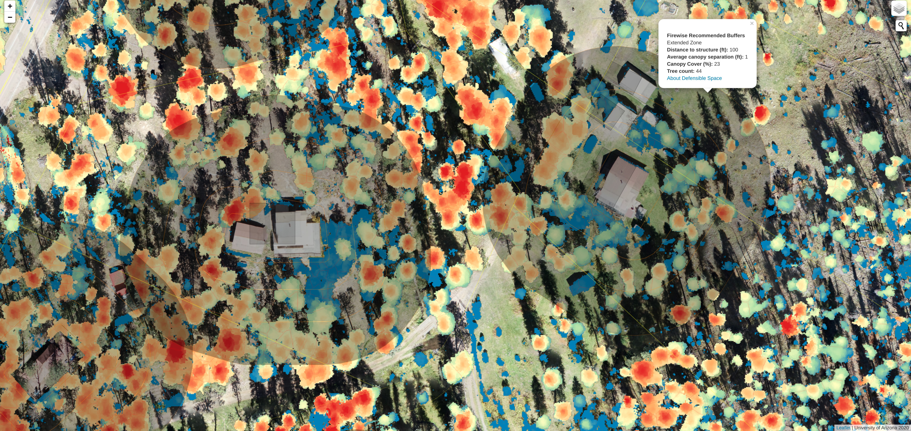

The US Forest Service Research branch quantifies wildfire risks (WildfireRisk.org) across the western US.
While these maps are at too coarse a resolution (100-270 meter pixels) for estimating fire risk to individual properties, they reveal how likely a fire is to spread across the landscape onto your private property.
The USGS 3DEP lidar datasets can be used for generating input parameters for fire behavior simulation models.
A sub-meter canopy height model was generated for the entire Jemez Mountains using the 2016 and 2018 lidar data.
The existing forest lidar data products can be anywhere from one to more than 10 years old. Changes to the forest structure, particularly on your private property may not be up-to-date with recent thinning projects. By flying drones, we can survey a neighborhood in a few hours, and develop datasets which are 100 to 1,000 times denser than those with aerial lidar in under a day. These new data can be compared to older lidar datasets, or to older drone datasets. By comparing changes overtime, we can show improvements from recent thinning efforts which may make your home within specification for recommended Firewise spacing.
Clicking on the Map feature will open up a Leaflet map with information about the Jemez Mountains Wildland Urban Interface (WUI).
Upon loading, the map shows the entire Jemez WUI.
There are two available base layers, a topographic contour map by Mapbox, and the Google Maps aerial orthophotography with hybrid features. You can select one or the other by clicking their check box in the layer group icon .
There are several vector layers that are immediately visible in the map (see table below). Some layers are only visible at higher zoom levels, these include the structures, tree canopies, and Firewise defensible space buffer layers.
The map defaults to a zoom level of 14 (1:35,000 scale) and ends at level 20 (1:500 scale).
There is a scale bar visible in the lower left corner of the map.
| Layers | Origin | Visibility | Extent |
|---|---|---|---|
| Historical Fire Atlas | USFS Fire Atlas | All levels | Northern New Mexico |
| Parcels | Sandoval County GIS | All levels | Jemez Mountains AOI |
| Structures | Microsoft Building Footprints | Zoom level 17+ | Jemez Mountains AOI |
| Firewise defensible space | sUAS flight areas | Zoom level 17+ | buffer around structures in Area 3 and 7 Springs |
| Individual tree canopies | sUAS flight areas | Zoom level 17+ | sUAS flight areas Area 3 and 7 Springs |
By clicking the search icon in the upper right you can enter an address or a community name and the map will zoom to that location. If you're on a mobile phone, the map may ask for your location and use it to zoom in on your current location (if you're not in New Mexico, this may take you far from our area of interest).
In the layer group icon you can turn on and off the different data layers.
| Layers | Date | Resolution | Extents |
|---|---|---|---|
| sUAS Orthomosaics | 2020 | 4 cm | Area 3, 7 Springs |
| sUAS Canopy Height Models | 2020 | 25 cm | Area 3, 7 Springs |
| lidar Canopy Height Model | 2016, 2018 | 25 cm | Jemez Mountains |
Around every structure that was mapped by the Microsoft US building footprints or by our team (by hand) you can see the buffered rings which represent the Firewise defensible space.
Firewise defensible space is described using four set distances from the structures, these were calculated in the GIS.
| Distance | Zone | Recommended Canopy Spacing | Extent |
|---|---|---|---|
| 0 to 5 feet | Immediate | No trees | remove all fuels around structures |
| 5 to 30 feet | Intermediate | >18 feet | remove ladder fuels |
| 30 to 60 feet | Extended | >12 feet | remove dead fuels |
| 60 to 100 feet | Extended | >6 feet | remove small trees near larger ones |
We also generated an inventory of trees visible in both the aerial lidar and the available drone data, the tree canopy spacing and the percent (%) canopy cover of the trees in the areas around the structures in each zone are reported by clicking on the buffers.
Navigate the map to find your home and see how dense the forest is relative to your surrounding area. Compare your home to the recommended Firewise defensible space recommendations.